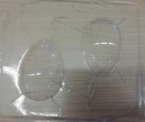
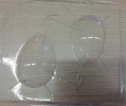
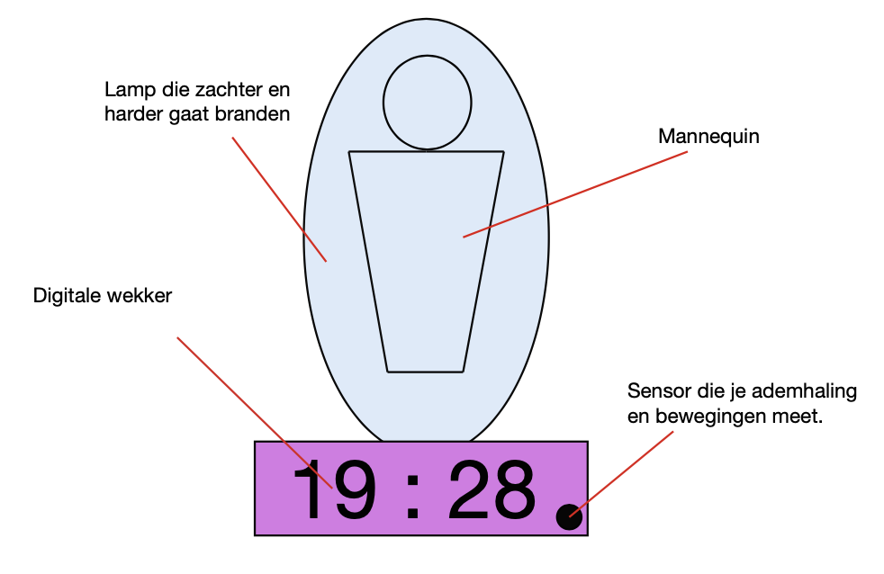
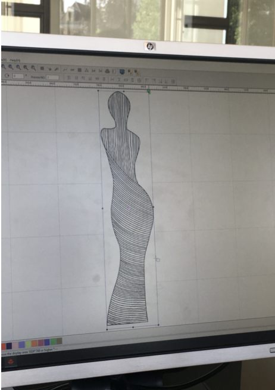
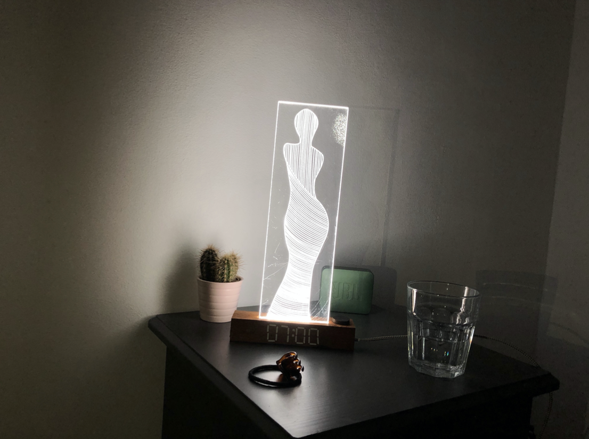

De opdracht
Wij kregen de opdracht om een fysiek interactief product te ontwerpen die begeleid werd door een one-pager website met informatie over het product. Doormiddel van het fysieke prototype willen wij de slaapervaring verbeteren en zorgen dat de gebruiker fijner slaapt en de kwaliteit van de slaap beter is bij AMFI studenten tussen de 18 en 25 jaar.
Wij hebben ons verdiept in AMFI studenten omdat uit onderzoek is gebleken dat zij een meest onregelmatige slaap hadden. En dan vooral tijdens de beoordelingsweken.

Eerst hadden wij het idee om een mannequin in de lamp te plaatsen. Hiervoor hebben we schetsen gemaakt. Ik en een ander meisje uit mijn groep gingen naar het makerslab om de mal van de lamp te maken. Dit hebben we gedaan doormiddel van vacuüm zuigen.
 

Later heb ik een interactie schets gemaakt van het product. Ik heb dit gedaan met behulp van een workshop interactie. Hierdoor wist ik waar ik op moest focussen wat er wel en niet in de schets moest komen.
Later besloten we echter geen mal meer te maken omdat het ontwerp daardoor niet mooi uit kwam en het te veel werk was om het probleem op te lossen. We gingen door met hetzelfde idee, alleen zonder mal. We hadden bedacht om op een stuk plexiglas een figuur van een mannequin te laten graferen. Met aan de onderkant van het plexiglas een stukje ledverlichting waardoor de mannequin licht gaf.


Ik heb samen met mijn vader de onderkant gemaakt waar het stuk plexiglas in staat. In het onderkant zit het stukje ledverlichting verwerkt waardoor die vanuit de onderkant van het stuk plexiglas omhoog schijnt en alleen de grafeerde mannequin laat oplichten.
Hier rechts zie je het eindresultaat.

Wat heb ik geleerd?
Bij dit project heb ik vooral geleerd om met minder motivatie jezelf er toch toe zetten om een goed, mooi en functioneel product te leveren. We werkte in een grote groep van 5 mensen, hierdoor was de communicatie niet altijd even goed. Ook verschilde de momenten van motivatie bij iedereen, hierdoor moest je elkaar vaker helpen en samen dingen doen.
Doordat we in een relatief grote groep moesten werken, heb ik ook veel geleerd van samenwerken. Ik merkte dat ik vaak een grotere rol in de groep op mezelf nam, ik deed dit altijd wel in overleg met de groep. Dit deed ik omdat ik dan zeker wist dat het gedaan werd en ik voelde mij er fijn bij. Ook mijn groepje vond het fijn als ik bijvoorbeeld een planning maakte voor die week of dat ik mensen opdrachten gaf wat ze moesten doen.